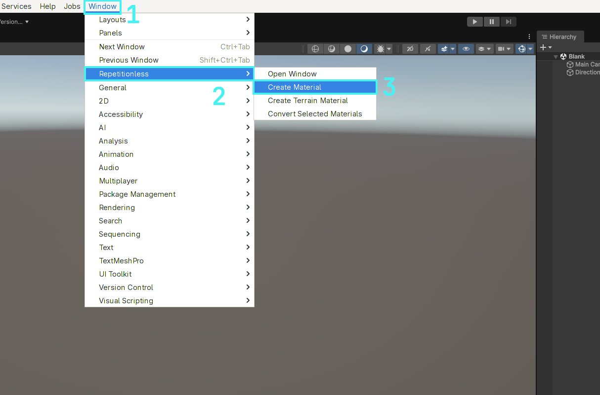
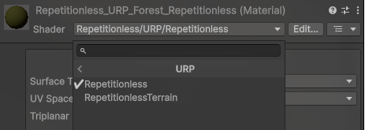
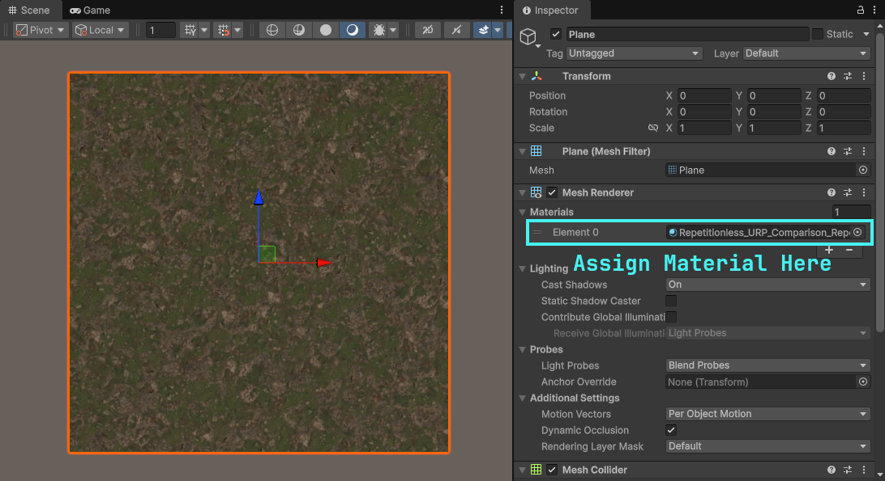

Using Regular Materials
Creating A Material
Automatic
- Open the windows tab in the toolbar
- Navigate to
Repetitionless - Click
Create Material - The material will be created in the current folder in the project window

Manual
- Create a material
- Select the shader dropdown
- Navigate to
Repetitionless - Select your render pipeline
- Select
Repetitionless

Important Details:
- Render pipelines can be switched without losing data. ex. Changing a Repetitionless material from BIRP to its URP version will keep all the settings
- Material data is stored in a folder along side the material named "{MaterialName}_Data". This is automatically moved and deleted with the material but it will need to be manually copied when copying the material
Using The Material
You can just assign repetitionless material to any Mesh Renderer and it will be applied to that object

Configuration
All the materials can be configured through its inspector by selecting the material and viewing the inspector window
To view what each property does, visit the Material Properties page